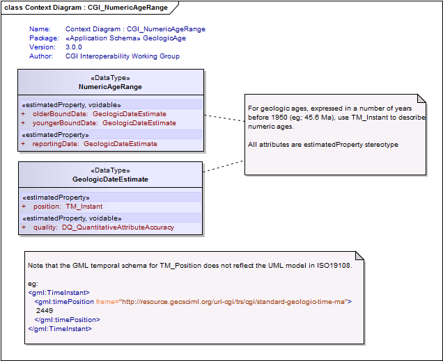
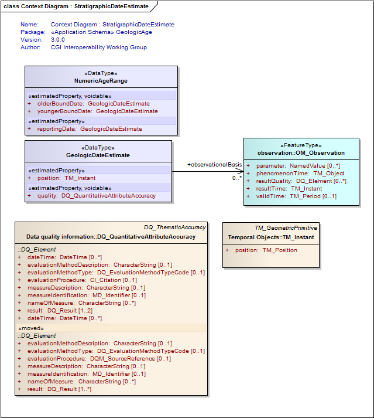
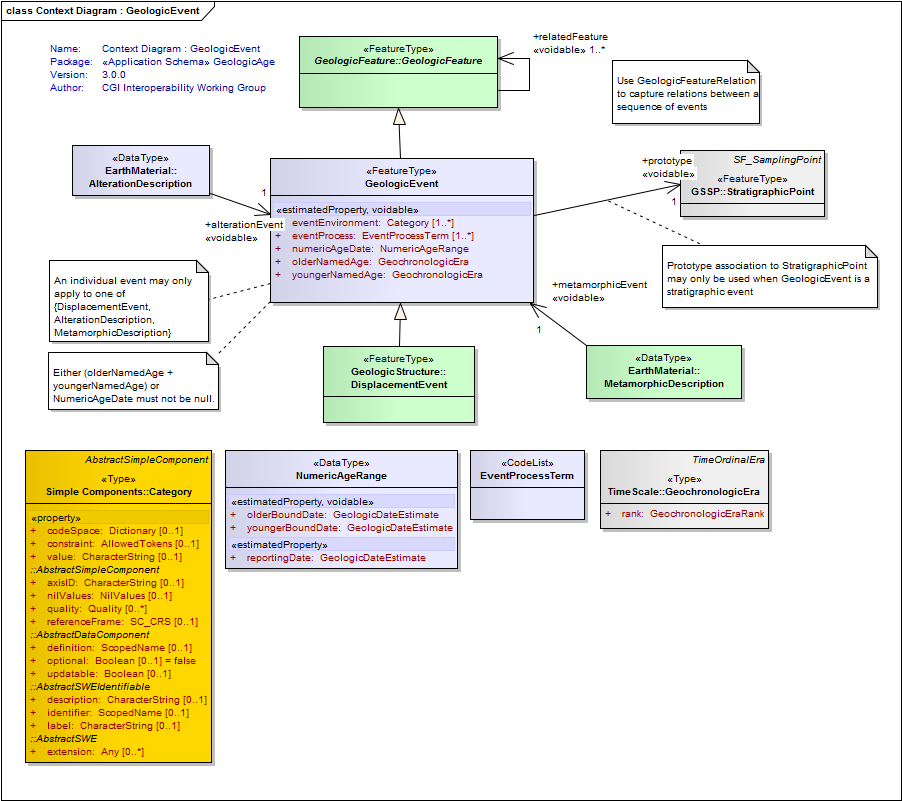
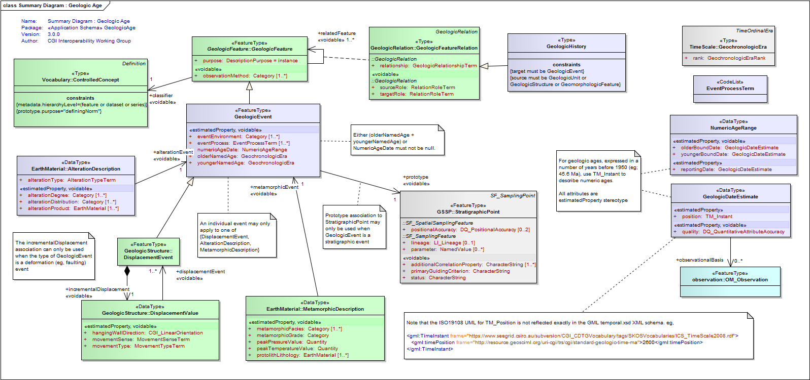
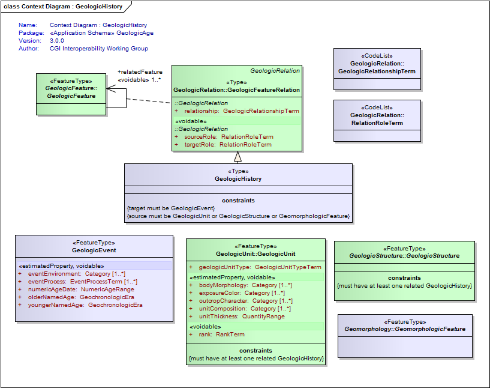

Package GeologicAge
The GeoSciML GeologicAge package contains classes to support the description of geologic ages and events.
A geologic age is related to a particular GeologicEvent, during which one or more geological processes act to modify geological entities.
Class Summary |
|
| <<FeatureType>> Classes | |
GeologicEvent
<<FeatureType>>
|
An identifiable event during which one or more geological processes act to modify geological entities. A GeologicEvent must have a specified GeologicAge and may have specified environments and processes. An example might be a cratonic uplift event during which erosion, sedimentation, and volcanism all take place. Geological history is an ordered aggregation of Geological Event objects, each of which may have an associated Geological Age, Geological Environment, and one or more Geological Process objects. Genesis typically pertains to some geological phenomenon (Geological Structure, Earth Material, Geological Unit, Fossil, etc.) In GeoSciML 2.0 this ordering cannot be specified. A GeologicEvent must have a specified eventAge (numericAgeDate, olderNamedAge, or youngerNamedAge), at least one eventProcess, and may have specified eventEnvironments. An example might be a cratonic uplift event during which erosion, sedimentation, and volcanism all take place. Traditionally, geologists have described the age of a feature without explicitly specifying the event or processes the age related to. The GeologicEvent package allows for explicitly linking the three, without mandating it. The eventAge attribute is the age of a particular geological event or feature expressed in terms of years before present (absolute age), referred to the geological time scale, or by comparison with other geological events or features (relative age). An eventAge can represent an instant in time, an interval of time, or any combination of multiple instants or intervals. Specifications of age in years before present are based on determination of time durations based on interpretation of isotopic analyses of EarthMaterial (some other methods are used for geologically young materials). Ages referred to geological time scales are essentially based on correlation of a geological unit with a standard chronostratigraphic unit that serves as a reference. Relative ages are based on relationships between geological units such as superposition, intruded by, cross-cuts, or "contains inclusions of". |
| <<Type>> Classes | |
GeologicHistory
<<Type>>
|
Relates one or more GeologicEvents to a GeologicUnit or GeologicStructure to describe their age or geologic history. |
| <<DataType>> Classes | |
GeologicDateEstimate
<<DataType>>
|
An estimate of a point in geologic time and a link to its observational basis |
NumericAgeRange
<<DataType>>
|
Class to represent general age assignment using numeric measurement results. All attributes have cardinality 1; report with nilReason="missing" if a value is absent. |
| <<CodeList>> Classes | |
EventProcessTerm
<<CodeList>>
|
Refers to a vocabulary of terms specifying the process or processes that occurred during an event. Examples include deposition, extrusion, intrusion, cooling. |
Tagged Values |
||
| Tag | Value | Notes |
| classMap | https://www.seegrid.csiro.au/subversion/GeoSciML/geologicAge/trunk/classmap/ClassMap_GeologicAge_GeoSciML_v3.xml | |
| gmlProfileSchema | #NOTES#Description: URL of the schema location of a GML profile (optional) | Description: URL of the schema location of a GML profile (optional) |
| owner | IUGS Commission for the Management and Application of Geoscience Information | |
| targetNamespace | http://xmlns.geosciml.org/GeologicAge/3.0 | Default: FIXME Description: Target XML namespace of the application schema |
| version | 3.0.0 | Default: FIXME Description: Current version of the application schema |
| xmlns | gsmlga | Default: FIXME Description: Namespace prefix to be used as short form of the target namespace |
| xsdDocument | geologicAge.xsd | Default: FIXME Description: Name of an XML Schema document to create representing the content of this package |
| xsdEncodingRule | iso19136_2007_INSPIRE_Extensions | Values: iso19136_2007 | iso19139_2007 | iso19136_2007_INSPIRE_Extensions Default: iso19136_2007 Description: XML Schema encoding rule to apply |
UML Diagram: Context Diagram : CGI_NumericAgeRange

UML Diagram: Context Diagram : StratigraphicDateEstimate

UML Diagram: Context Diagram : GeologicEvent

UML Diagram: Summary Diagram : Geologic Age

UML Diagram: Context Diagram : GeologicHistory
